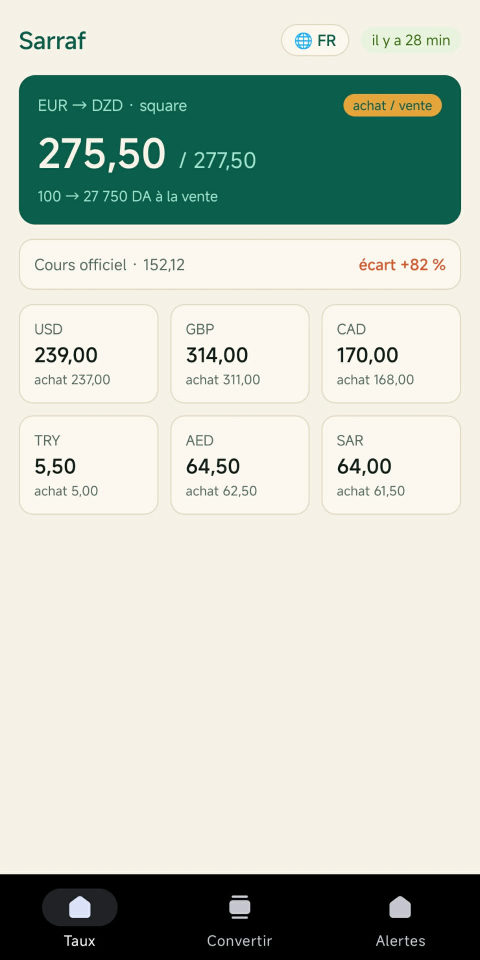
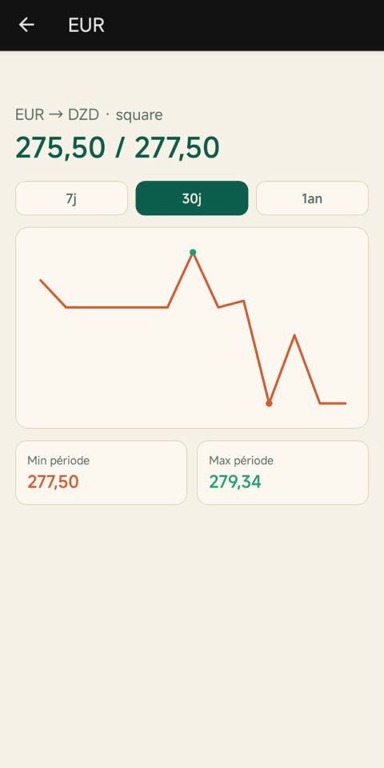
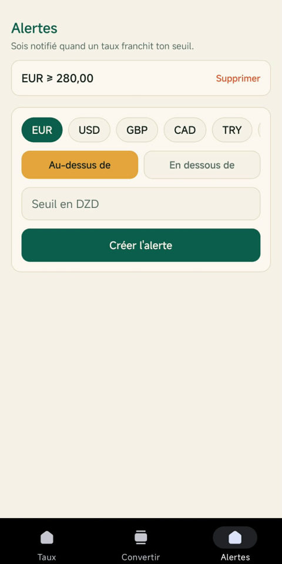

ASSIREM
Studio d'applications mobiles.
Sarrafصرّاف
Le taux de change du dinar algérien, en un coup d'œil : le cours officiel de la Banque d'Algérie et le taux constaté sur le marché parallèle (le square), côte à côte — pour 7 devises, mis à jour toutes les 30 minutes. À titre informatif.
Bientôt sur Google Play


Officiel & square, côte à côteLe cours Banque d'Algérie, le taux constaté au square Port-Saïd, et l'écart en %.
7 devisesEUR, USD, GBP, CAD, TRY, AED, SAR face au dinar (DZD), pour 1 et pour 100.
Alertes de seuilChoisis ton seuil, reçois une notification quand le taux le franchit.
HistoriqueLa courbe sur 7 jours, 30 jours ou 1 an, avec min et max de période.
ConvertisseurDans les deux sens, à l'achat comme à la vente, au taux officiel ou au square.
3 langues, hors ligneFrançais, arabe (RTL complet), anglais — les derniers taux restent visibles sans connexion.